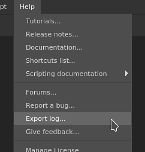
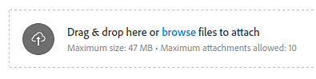

This page explains how to find the application log file and how to share it to ask for support.
There are two ways of obtaining the log file:
The log file can be directly exported from the application by going into the Help menu and selecting the Export log action.

If the application doesn't launch it will not be possible to export the log file. Fortunately the log file can be located manually on the disk. Navigate to the folder matching your operating system below and retrieve the log.txt file manually.
| Platform | Version | Path | |
|---|---|---|---|
| Windows | 7.2 or newer | App Data (local) | C:\Users\[username]\AppData\Local\Adobe\Adobe Substance 3D Painter |
| App Data (roaming) | C:\Users\[username]\AppData\Roaming\Adobe\Adobe Substance 3D Painter | ||
| Legacy | App Data (local) | C:\Users\[username]\AppData\Local\Allegorithmic\Substance Painter | |
| App Data (roaming) | C:\Users\[username]\AppData\Roaming\Allegorithmic\Substance Painter | ||
| Mac | 7.2 or newer | /Users/[username]/Library/Application Support/Adobe/Adobe Substance 3D Painter | |
| Legacy | /Users/[username]/Library/Application Support/Allegorithmic/Substance Painter | ||
| Linux | 7.2 or newer | /home/[username]/.local/share/Adobe/Adobe Substance 3D Painter | |
| Legacy | /home/[username]/.local/share/Allegorithmic/Substance Painter | ||
When writing a message, use the attachment area to insert your log file:
